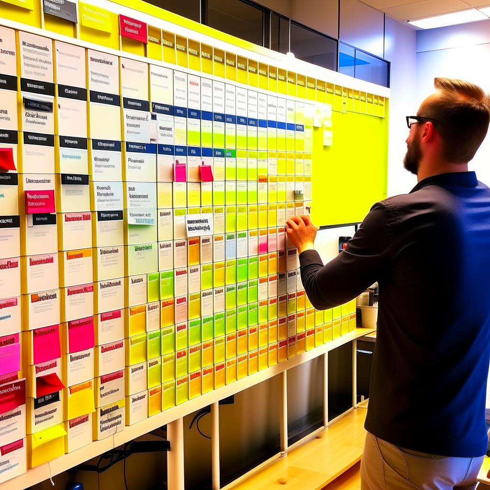
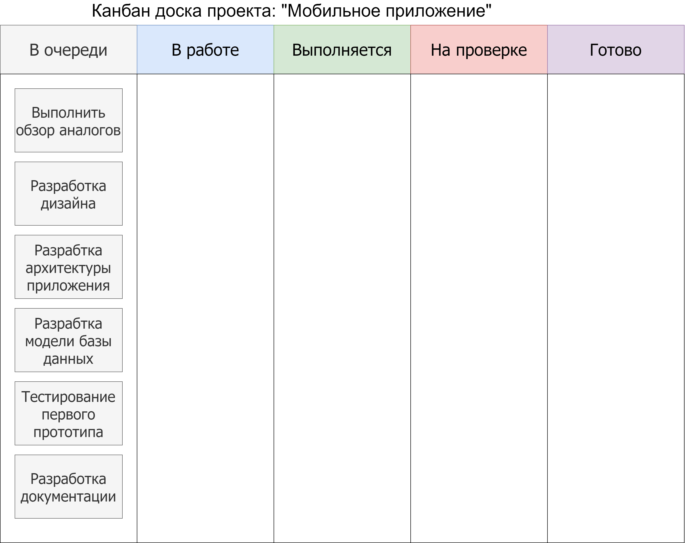

Git как инструмент командной работы. Работа с удаленными репозиториями.¶
Современный мир технологий и инноваций требует от специалистов не только глубоких знаний и навыков в своей области, но и умения эффективно сотрудничать в команде. Командная разработка стала неотъемлемой частью современного программирования, позволяя создавать сложные и инновационные продукты, которые были бы невозможны для одного разработчика. В данном учебном пособии мы погрузимся в мир командной работы, исследуя его принципы, лучшие практики и вызовы.
Так что же такое командная работа? Почему этому уделяется так много внимания? Посмотрим плейлист с записями видео докладов с конференции IT-шной компании, или в статьи на хабре и наверняка найдем что-нибудь про: «Работу в команде», «Управление проектом,» Эффективный менеджемнт» «Навыки Soft Skill», и много тому подобных тем. Глядя со стороны на эти темы, может показаться, что это глупости и ведь всё настолько очевидно, что нет смысла повторяться и говорить о том, «как одному разработчику в команде попросить о помощи другого», или «как мне соощить коллеге о найденном баге в его коде». Можно ведь просто позвонить ему и сообщить о своей находке, а можно самому исправить баг и позже сообщить коллеге при встрече. Наверняка каждый из нас сталкивался с подобной ситуацией. Однако, тут не всё так просто.
Работу в команде можно сравнить с системой автопилота самолета или беспилотного автомобиля. В которых за процессом управления непрерывно следят сотни или даже тысячи подсистем, информирующих бортовой компьютер о своем состоянии и показаниях датчиков. Таким образом, бортовой компьютер всегда обладает актуальной информацией и принимает лучшее решения для управления движением.
Аналогичным образом выглядит процесс управления разработкой IT проекта, в котором условный «бортовой компьютер» это «Руководитель проекта». Его роль - принимать эффективные решения, способствующие успешному запуску IT продукта и его дальнейшего развития. Как и у «бортового компьютера», у Руководителя проекта есть команда, с которой он взаимодействует, получает информацию, принимает управленческие решения. Например, расширить команду разработчиков, сформировать команду тестировщиков, разработать стратегию вывода продукта на рынок и т.д.
Состав команды и их задачи в проекте разработки программного продукта
Менеджер проекта:
Организует работу команды, следит за сроками и бюджетом.
Распределяет задачи между участниками и координирует их деятельность.
Составляет план разработки и следит за его выполнением.
Решает организационные и коммуникационные вопросы.
Архитектор:
Определяет общую архитектуру продукта и его компонентов.
Разрабатывает технические решения и структуры системы.
Обеспечивает согласованность и соответствие архитектуры целям проекта.
Разработчики:
Отвечают за разработку кода, интеграцию со сторонними сервисами и реализацию дополнительной функциональности продукта.
Работают над конкретными модулями или компонентами.
Проводят тестирование своего кода и участвуют в код-ревью.
Тестировщики:
Занимаются тестированием функциональности продукта.
Разрабатывают тестовые сценарии и проводят автоматическое и ручное тестирование.
Выявляют и документируют ошибки и несоответствия в работе продукта.
Дизайнер/Интерфейсный дизайнер:
Разрабатывает дизайн пользовательского интерфейса продукта.
Создает макеты, элементы дизайна и визуальные компоненты.
Обеспечивает удобство использования и эстетическое качество интерфейса.
Технический писатель/Разработчик документации и инструкций пользователя (User guide):
Разрабатывает документацию для продукта: руководства пользователя, API-документацию и т.д.
Обеспечивает четкость и понятность технической информации.
Взаимодействует с другими членами команды для сбора и структурирования информации.
Системный администратор/DevOps инженер:
Занимается настройкой инфраструктуры и серверов для разработки и развертывания продукта.
Обеспечивает автоматизацию процессов сборки, тестирования и развертывания.
Решает вопросы масштабирования и безопасности инфраструктуры.
Это классический состав команды, который охватывает основные этапы разработки программного продукта – от планирования и проектирования до разработки, тестирования и документирования. Каждый участник команды вносит вклад в успешное выполнение проекта, обеспечивая высокое качество и соблюдение сроков.
С командой и её составом мы разобрались. Казалось бы, что этого достаточно - нужно чтоб каждый выполнял свои задачи и тогда всё будет работать как часы. И тут мы с вами подходим к главному вопросу: Как организовать и запустить рабочий процесс в команде так, чтоб каждый знал что ему нужно делать и понимал как взаимодействовать с коллегами в команде.
Конечно, мы можем «смоделировать ситуацию и мысленно представить этот рабочий процесс», как лучше поступить каждому участнику команды, выбрав на наш взгляд самый эффективный способ взаимодействия внутри команды. Каждый может это представить и будет по-своему прав.
Однако, в реальном мире всё несколько иначе. Каждый сотрудник должен уметь включаться в командную работу учитывая не только свои интересы, но также и интересы коллектива взаимодействуя в команде в которой имеются внутренние договоренности, нормы и правила. Если обратиться, к примеру «автопилота», то все системы взаимодействуют друг с другом посредством «протокола передачи данных». В протоколе прописаны «правила» и «критерии», которые должны соблюдать все устройства использующие этот протокол. Например, благодаря протоколу HTTP вы можете «серфить по интернету» и не важно, каким устройством (ноутбук, смартфон, планшет и т.д.) и какой канал связи (WiFi, Ethernet, 5G) вы используете. Вы сможете открыть любой сайт и выполнить действие. Например, оформить доставку пиццы и оплатить свой заказ. Требования к протоколам сформулированы в специальном документе - «техническом стандарте». Подробнее про стандарты и протоколы можете посмотреть в справочном материале.
Знакомство с методом SCRUM¶
Для управления IT проектами часто можно услышать про методологию SCRUM
Методология SCRUM представляет собой гибкий подход к управлению проектами, ориентированный на совместную итеративную разработку программных продуктов. В ней выделяются следующие ключевые идеи:
Итеративность и поступательность: Проект разбивается на небольшие временные интервалы, называемые спринтами, каждый продолжительностью 1-2 недели. Длительность спринта зависит от задач проекта и возможностей команды. Каждый спринт добавляет новую функциональность к продукту, или вносит серьезное изменение в существующий проект. Например, команда разрабатывает мобильную игру в которой с помощью «функциональных блоков» выстраивается стратегия игрока. Разработку нового типа «блока» с уникальным функционалом, который будет совместим с уже имеющимися блоками можно считать новой итерацией (шагом) в разработке игры. Эту задачу можно реализовать в пределах одного спринта.
Роли и обязанности: В SCRUM выделяются три ключевые роли: Продуктовый Владелец (Product Owner), Мастер SCRUMа (Scrum Master) и Разработчики. Каждая роль выполняет определенные функции для эффективной работы команды.
Бэклог продукта: Это список задач и требований, представляющих потребности клиентов и пользователей. Бэклог продукта непрерывно обновляется, и наиболее приоритетные задачи планируются для выполнения в ближайших спринтах. В качестве инструмента для обозначения статуса задач и заметок используют «Канбан доску». Это инструмент визуализации рабочего процесса и управления задачами. Она представляет собой физическую или электронную доску, разделенную на несколько колонок, которые отражают различные этапы выполнения задач. Каждая задача представлена карточкой, которая перемещается по колонкам в зависимости от ее текущего статуса. Подробнее с этим инструментом познакомимся чуть позже.
Планирование спринта: На начало каждого спринта команда выбирает задачи из бэклога продукта для выполнения. Задачи декомпозируются на более мелкие, оцениваются временем и планируются для достижения цели спринта.
Ежедневные стендапы: Команда проводит короткие ежедневные встречи, на которых каждый член команды отвечает на три вопроса: «Что я сделал вчера?», «Что я собираюсь сделать сегодня?» и «Есть ли какие-либо препятствия?». Это помогает поддерживать прозрачность и обмен информацией.
Спринт-ревью и ретроспектива: По завершении спринта проводится спринт-ревью, на котором команда представляет результаты продукту. Затем проводится спринт-ретроспектива, на которой анализируются успехи и уроки для улучшения процесса.
Адаптация: Одной из ключевых идей SCRUM является постоянное совершенствование. Команда адаптируется к изменениям, основанным на обратной связи, и внедряет улучшения для повышения эффективности работы.
Прозрачность и открытость: В SCRUM поддерживается прозрачность во всех аспектах работы. Задачи, прогресс, проблемы и решения доступны всей команде, что способствует коллективной ответственности за успех проекта.
Управление рисками: SCRUM позволяет быстро выявлять риски и проблемы и реагировать на них в реальном времени. Это помогает минимизировать негативные воздействия на проект.
Цикличность и непрерывное улучшение: Методология SCRUM ориентирована на непрерывное совершенствование процесса, продукта и команды. Постоянное обучение и адаптация помогают достигать лучших результатов.
Использование методологии SCRUM в IT стартапе способствует быстрой разработке и поставке качественных продуктов, учету изменений и потребностей клиентов, а также эффективной командной работе.
Знакомство с канбан-доской¶
 Основная цель Канбан-доски - обеспечить прозрачность рабочего процесса чтоб каждый участник проекта мог видеть какие задачи ожидают решения в списке очереди, и кто в текущий момент выполняет какие задачи. Таким образом этот инструмент помогает управлять ресурсами и распределять рабочую нагрузку для оптимизации различных затрат, в том числе и временных. Задачи могут быть разбиты на подзадачи, приоритеты могут быть ясно видны, а вся команда может легко оценить текущее состояние проекта.
На Канбан-доске обычно используются следующие базовые колонки:
Backlog (Очередь задач): Эта колонка содержит задачи, которые пока не приступили к выполнению. Здесь формируется список задач, из которого команда будет брать новые задания для работы.
To Do (В работе): В этой колонке находятся задачи, над которыми в данный момент работают участники команды.
In Progress (Выполняются): Задачи, которые находятся в процессе выполнения, перемещаются сюда после начала работы.
Review (На проверке): После того как задача завершена, она переходит в эту колонку на проверку и ревью другими членами команды.
Done (Готово): Когда задача полностью выполнена и прошла проверку, она перемещается в эту колонку.
Кроме базовых колонок, на доске могут быть добавлены и другие, в зависимости от потребностей команды и характера проекта. Например:
Blocked (Заблокировано): Здесь помещаются задачи, которые не могут быть продолжены из-за каких-либо проблем или зависимостей.
Testing (Тестирование): Задачи, находящиеся в этой колонке, ожидают проведения тестирования.
Deploy (Развертывание): Для задач, которые готовы к развертыванию, но еще не внедрены в продакшн.
Archived (Архив): Завершенные и проверенные задачи могут быть перемещены сюда, чтобы не засорять основную доску.
Выбор колонок зависит от особенностей проекта и его специфики. Например, разработка «чат-бота» и разработка «мобильного приложения» это 2 проекта которые отличаются как инструментами разработки, так и методами тестирования и внедрения. Следовательно, и колонки на Канбан доске будут отличаться как по количеству, так и по их структура может быть адаптирована для соответствия рабочему процессу. 
Задача: Планирование и организация работы над разработкой чат-бота с использованием Канбан доски.¶
Описание задачи: Вашей задачей является разработка детального плана работы над проектом чат-бота с использованием методологии Канбан. Данный план должен включать в себя определение основных этапов разработки, колонок на Канбан доске и описание процесса перемещения задач между этими колонками. Вам также предстоит определить ответственных за каждый этап и роли в команде.
Шаги выполнения:
Определение этапов разработки: Разбейте весь процесс разработки чат-бота на основные этапы, такие как проектирование, разработка, тестирование, ревью, развертывание и др.
Создание Канбан доски: Определите основные колонки на Канбан доске. Обычно это Backlog, To Do, In Progress, Review, Testing, Done.
Описание перемещения задач: Для каждой колонки опишите, какие задачи могут находиться в ней, и каким образом они будут перемещаться от этапа к этапу. Например, задачи могут начинать свой путь с Backlog, затем переходить в To Do, когда назначены на выполнение, далее в In Progress при начале работы и так далее.
Назначение ответственных: Определите, кто будет ответственным за каждый этап. Это может быть разработчик, тестировщик, ревьюер и т.д. Распределите роли в команде.
Установление временных рамок: Определите ожидаемое время выполнения для каждого этапа (спринта) и задачи. Это поможет вам лучше планировать и контролировать процесс разработки и оценивать время.
Создание доски: Воспользуйтесь инструментом для создания Канбан доски, например, онлайн-сервисами или физической доской с карточками.
Запуск работы: Начните работу с разработкой чат-бота в соответствии с описанным планом. Перемещайте задачи по Канбан доске, следите за прогрессом и корректируйте план при необходимости.
Внесение изменений: При необходимости, вносите изменения в Канбан доску, добавляя новые колонки или меняя порядок этапов. Главное, чтобы доска отражала текущий процесс и удовлетворяла потребности команды.
Цель задачи: Разработать детальный план работы над проектом с использованием Канбан доски, который поможет команде эффективно организовать процесс разработки чат-бота, контролировать прогресс и достичь успешных результатов.
Заключение¶
В данном блоке мы постарались кратко познакомиться вас с основными элементами командной работы на IT проектом: От начальных этапов планирования и определения ролей, до финального слияния кода и представления результатов, мы рассказали о ключевых шагах и важных уроках, которые вам помогут при выполнении совместной работы. Конечно, есть и много других тем, которые не были представлены в данном модуле, однако все они являются ветвями развития представленных базовых основ. Надеемся что вам удалость:
Ознакомиться с принципами формирования эффективной команды разработчиков.
Понять, как распределение ролей и задач влияет на процесс работы над проектом.
Исследовать методы планирования и организации проекта в команде.
Узнать о инструментах и технологиях, которые облегчают командную разработку.
Погрузиться в аспекты совместной работы, решения конфликтов и обмена знаний.
Мы надеемся, что этот рассказ о командной работе станет вдохновением для тех, кто стремится к профессиональному росту и успешной совместной разработке. Надеемся что уроки, которые были представлены в этом модуле, помогут вам на пути к развитию навыков командной работы и созданию качественных технологических продуктов.
Проверочные вопросы¶
Что такое методология Scrum и какие основные компоненты она включает?
Какие преимущества предоставляет методология Scrum при управлении IT-проектами?
Чем отличается Scrum Master от Product Owner в контексте Scrum?
Какие основные роли включает команда разработки в методологии Scrum и каковы их обязанности?
Что такое Sprint (итерация) в Scrum? Какие действия выполняются в рамках Sprint?
Что такое канбан доска и как она помогает в управлении проектом?
Какие принципы лежат в основе канбан методологии? Как она отличается от Scrum?
Какое значение имеет распределение ролей в команде проекта? Какие роли обычно включаются в команду разработки?
Какие ключевые навыки и характеристики важны для успешной работы в команде проекта?
Какие практики способствуют эффективной командной работе в IT-проекте?
Справочная информация¶
В этом блоке представлена справочная информация, которая может послужить хорошим материалом, чтоб погрузиться в темы «Командная работы» и «Управление проектами». Представлен краткий анализ и сравнение различных методик управления проектами, а также некоторые подробности этапов их реализации. Также, здесь собраны краткие исторические факты и некоторые теоретические дополнения, которые помогут найти ответы, на некоторые вопросы, появившиеся при изучении основного материала.
Роли каждого участника команды¶
1. Программист: Программист отвечает за добавление нового функционала в игру. Например, он может работать над созданием новых типов блоков, улучшением алгоритма генерации фигур или добавлением новых игровых режимов. Программист анализирует код игры, понимает, какие изменения необходимы, и начинает их реализацию. Он также занимается тестированием своего кода, чтобы убедиться, что новый функционал работает корректно.
2. Тестировщик: Тестировщик проверяет новый функционал на работоспособность и корректность. Он разрабатывает тестовые сценарии, которые покрывают различные аспекты игры с новым функционалом. Тестировщик также проводит тестирование на разных уровнях - от модульного тестирования до интеграционного тестирования. Если тесты выявляют ошибки или неполадки, тестировщик сообщает разработчику, чтобы проблемы могли быть исправлены.
3. Технический писатель: Технический писатель разрабатывает документацию, которая объясняет, как использовать новый функционал игры. Это может быть руководство пользователя, описание новых игровых режимов или объяснение изменений для других разработчиков. Технический писатель обеспечивает четкость и понятность документации, чтобы пользователи или коллеги могли легко разобраться в новых возможностях игры.
4. Менеджер проекта: Менеджер проекта координирует деятельность всей команды. Он следит за сроками выполнения задач, управляет ресурсами и обеспечивает коммуникацию внутри команды. Менеджер проекта также может помогать в планировании разработки нового функционала, распределять задачи между участниками и решать организационные вопросы. Важно, чтобы менеджер проекта обеспечивал эффективное взаимодействие между всеми участниками команды и следил за достижением целей проекта.
Каждый участник команды играет важную роль для достижения цели - успешной доработки игры «Тетрис». Их совместная работа, обмен знаниями и координация позволяют достичь хорошего результатов.
Краткая история методологии SCRUM¶
История появления методологии SCRUM началась в мире разработки программного обеспечения в начале 1980-х годов. В то время компания Easel Corporation, занимавшаяся разработкой графических приложений, столкнулась с необходимостью улучшить свой подход к разработке, чтобы более эффективно управлять проектами и достигать более предсказуемых результатов.
В 1986 году, Джефф Сазерленд (Jeff Sutherland), занимавшийся исследованиями в области управления проектами, разработал первый прототип методологии SCRUM, который использовался внутри компании Easel. В 1993 году, Сазерленд и Кен Швабер (Ken Schwaber), также работавший в Easel, представили идеи SCRUM на конференции OOPSLA (Object-Oriented Programming, Systems, Languages & Applications).
Следующие годы были периодом экспериментов, модификаций и совершенствования методологии SCRUM. Команда разработчиков, включая Сазерленда и Швабера, проводила исследования и тестировала принципы SCRUM на различных проектах. В 2001 году, на знаменитой встрече «Snowbird», группа специалистов по разработке программного обеспечения, включая Сазерленда и Швабера, сформулировала Манифест гибкой разработки программного обеспечения (Agile Manifesto), который включал в себя принципы, заложенные в SCRUM.
С тех пор SCRUM приобрел широкое признание и стал одним из самых популярных и успешных методологических фреймворков в области разработки программного обеспечения. Его применяют не только в IT-индустрии, но и во многих других отраслях, где важно быстро и гибко реагировать на изменения и достигать высококачественных результатов.
PMBOK, Agile и Scrum являются тремя разными методологиями и подходами к управлению проектами. Вот как они связаны между собой:
PMBOK (Project Management Body of Knowledge): PMBOK - это набор стандартов и рекомендаций, разработанный Project Management Institute (PMI), который охватывает все ключевые аспекты управления проектами. Он включает в себя различные процессы, знания и практики, необходимые для эффективного управления проектами. PMBOK не привязан к конкретной методологии и может быть адаптирован к разным подходам.
Agile (гибкая методология): Agile - это общий термин, описывающий группу методологий управления проектами, которые акцентируются на гибкости, сотрудничестве и быстрой адаптации к изменениям. Agile подходы ориентированы на достижение результатов через инкрементальное итеративное развитие, приоритизацию задач и активное взаимодействие с заказчиком.
Scrum: Scrum - это конкретная методология Agile, которая представляет собой фреймворк для управления проектами. Он включает в себя роли (Product Owner, Scrum Master, Development Team), события (Sprint Planning, Daily Standup, Sprint Review, Sprint Retrospective) и артефакты (Product Backlog, Sprint Backlog, Increment), которые помогают командам разрабатывать продукт в коротких циклах (спринтах) с постоянной обратной связью и адаптацией.
Связь между ними:
PMBOK описывает широкий спектр практик управления проектами, включая традиционные методы. Agile - это общий подход, который акцентирует внимание на гибкости и реагировании на изменения, и он может быть применен к разным методологиям. Scrum - это конкретный фреймворк Agile, который предоставляет инструкции и инструменты для управления проектами с акцентом на сотрудничество и итеративное развитие. Многие компании и команды применяют элементы Agile и Scrum в сочетании с PMBOK для создания гибкой и эффективной методологии управления проектами, которая учитывает как традиционные, так и инновационные подходы.
Управление коммуникациями¶
«Управление коммуникациями» в рамках PMBOK охватывает планирование, выполнение и контроль коммуникаций внутри проектной команды и с заинтересованными сторонами. Эффективный обмен информацией и коммуникации считаются ключевыми элементами успешного управления проектом, поскольку они способствуют пониманию, сотрудничеству и принятию правильных решений. Вот подробнее об этом аспекте:
Планирование коммуникаций:¶
Определение целей коммуникаций: Определение, что именно должно быть достигнуто через коммуникации в проекте.
Идентификация аудитории: Определение заинтересованных сторон, которым необходимо предоставить информацию и с кем следует поддерживать обмен. Определение сообщений: Какие сообщения и какая информация будет распространяться.
Выбор методов и средств коммуникаций: Определение наиболее подходящих способов для достижения задач коммуникаций (например, встречи, отчеты, электронные письма и др.).
Разработка плана коммуникаций: Создание документированного плана, который описывает кто, что, когда и как будет коммуницировать. Распределение коммуникаций:
Распространение информации: Отправка сообщений, предоставление данных и обмен информацией с членами команды и стейкхолдерами.
Своевременность и четкость: Гарантирование того, что коммуникации происходят вовремя и ясно, исключая неоднозначности.
Мониторинг и контроль коммуникаций:¶
Оценка эффективности: Оценка, насколько эффективными являются методы коммуникаций и как достигается задачи.
Регулирование и улучшение: Если процесс коммуникаций не работает эффективно, регулирование методов и средств для улучшения взаимодействия. Эффективное управление коммуникациями в проекте способствует более гладкому сотрудничеству между участниками команды, повышению осведомленности всех сторон о текущем состоянии проекта и позволяет решать проблемы и конфликты более оперативно.
Управление коммуникациями в контексте небольшого IT стартапа, который применяет методологию SCRUM, играет важную роль в обеспечении эффективной командной работы, передаче информации и обмене знаний между участниками проекта. Важно поддерживать своевременную и прозрачную коммуникацию, чтобы участники проекта были в курсе всех изменений, задач и достигнутых результатов.
Процесс управления коммуникациями в стартапе, использующем SCRUM, может выглядеть следующим образом:¶
Daily Stand-ups: Ежедневные стендапы (Daily Stand-ups) - это короткие встречи, на которых каждый член команды делится своими достижениями, планами на день и возникшими препятствиями. Это позволяет всей команде быть в курсе актуальной ситуации, устранять блокирующие факторы и поддерживать синхронизацию работ.
Спринт-планирование: На начало каждого спринта проводится встреча спринт-планирования, где команда определяет, какие задачи будут выполнены в текущем спринте. На этой встрече важно провести детальное обсуждение и разъяснение задач, чтобы убедиться, что каждый член команды понимает свои обязанности.
Спринт-ревью: В конце спринта проводится спринт-ревью, на котором команда демонстрирует полученные результаты заказчику и другим заинтересованным сторонам. Это время для обратной связи и обсуждения проделанной работы.
Спринт-ретроспектива: После спринт-ревью проводится спринт-ретроспектива, где команда анализирует прошлый спринт, выявляет положительные моменты и обсуждает, что можно улучшить. Это способ повысить эффективность командной работы и процессов.
Инструменты коммуникации: Важно выбрать подходящие инструменты для коммуникации, например, Slack, Microsoft Teams или Trello. Они позволяют обмениваться информацией, документами и управлять задачами в режиме реального времени.
Открытость и прозрачность: Коммуникация в стартапе должна быть открытой и прозрачной. Это означает делиться информацией о ходе проекта, достигнутых успехах и возникших проблемах. Это помогает создать атмосферу доверия и сотрудничества.
Управление изменениями: В ходе разработки стартап может столкнуться с изменениями в требованиях или приоритетах. Эти изменения также должны быть прозрачно обсуждены и приняты в команде.
Управление коммуникациями в методологии SCRUM помогает снизить риски недопонимания, ускорить процесс принятия решений и создать единую видимость проекта для всех участников.
Процесс управления в небольшом IT стартапе¶
Процесс управления в небольшом IT стартапе, который использует методологию SCRUM, ориентирован на достижение целей проекта через гибкое планирование, прозрачное выполнение задач и систематический анализ результатов. Процесс управления включает следующие ключевые этапы:
Планирование проекта: В начале проекта команда стартапа определяет общую картину целей, ожидаемые результаты и план спринтов. План спринтов включает список задач и приоритеты, которые будут выполнены в каждом спринте. Этот этап позволяет определить общий курс разработки и обеспечить общее понимание среди участников.
Создание бэклога продукта: Бэклог продукта представляет собой список задач, которые необходимо выполнить в проекте. Задачи в бэклоге приоритезируются, чтобы обеспечить максимальное добавление ценности для клиентов и пользователей.
Планирование спринта: Команда стартапа выбирает задачи из бэклога продукта для выполнения в следующем спринте. Задачи декомпозируются на меньшие подзадачи, оцениваются временем и приоритезируются в порядке их важности.
Ежедневные стендапы: Каждый день команда проводит короткую встречу, на которой каждый член команды дает ответ на три вопроса: «Что я сделал вчера?», «Что я планирую сделать сегодня?» и «Есть ли какие-либо препятствия?». Это помогает участникам быть в курсе прогресса и обнаруживать проблемы в ранней стадии.
Выполнение спринта: Команда работает над задачами в течение спринта (обычно 2-4 недели). Разработчики регулярно обмениваются информацией и обсуждают прогресс. Промежуточные результаты показываются заказчику на спринт-ревью.
Спринт-ревью и ретроспектива: По завершении спринта проводится спринт-ревью, где демонстрируются результаты заказчику. Затем проводится спринт-ретроспектива, на которой команда анализирует, что было сделано хорошо и что можно улучшить.
Регулярные обзоры: Регулярно проводятся обзоры с заказчиком, на которых обсуждаются текущие задачи, изменения в приоритетах и выставляются оценки выполнения работ.
Анализ метрик: Команда стартапа анализирует ключевые метрики проекта, такие как скорость выполнения задач, качество продукта и удовлетворенность клиентов. Эти метрики помогают принимать решения и корректировать планы.
Процесс управления в стартапе на базе SCRUM позволяет команде эффективно работать над проектом, реагировать на изменения в требованиях и быстро доставлять ценность клиентам. Гибкость и прозрачность методологии SCRUM способствуют успешной реализации проектов в условиях быстро меняющейся среды IT.
Процесс управления проектом по PMBOK¶
Процесс управления в контексте управления проектами, особенно как описано в стандарте PMBOK (Project Management Body of Knowledge), включает в себя множество активностей и шагов, необходимых для планирования, мониторинга, контроля и закрытия проекта. Процесс управления охватывает всю жизненный цикл проекта, начиная с его инициирования и заканчивая завершением.
Процесс управления включает следующие ключевые аспекты:
Инициирование: Этот этап включает в себя определение бизнес-целей, целей проекта и оценку его осуществимости. Важно также определить заинтересованных сторон и их ожидания от проекта. В результате этого этапа создается документ, называемый Хартером проекта, который формализует основные параметры проекта.
Планирование: Планирование включает в себя разработку детального плана проекта, определение необходимых ресурсов, установление расписания, а также определение стратегий управления качеством, рисками, коммуникациями и другими аспектами. План проекта служит основой для выполнения и мониторинга.
Исполнение: На этом этапе команда проекта реализует план, выполняет запланированные работы и создает продукты или результаты, соответствующие требованиям проекта и ожиданиям заказчика.
Мониторинг и контроль: Этот этап включает постоянный мониторинг выполнения проекта по сравнению с планом. Если отклонения выявлены, то применяются корректирующие меры. Происходит оценка рисков и качества, а также обеспечивается соблюдение графика и бюджета.
Закрытие: В конце проекта проводится формальное закрытие, которое включает в себя проверку выполнения всех требований проекта, передачу результатов заказчику и завершение всех административных и финансовых аспектов.
Процесс управления обеспечивает системный и структурированный подход к управлению проектом, который позволяет своевременно и эффективно достигать поставленных целей. Кроме того, он учитывает не только технические аспекты, но и социальные, коммуникационные и организационные аспекты управления проектом.
Процесс решения задачи в команде: Как обдумать, детерминировать и выполнить задачу¶
Шаг |
Описание |
|---|---|
1 Понимание «Задачи и Разделение задач на простые части» |
Обсуждение задачи и разбиение ее на более мелкие управляемые части. Менеджер проекта и архитектор участвуют в этом процессе. Для создания страницы авторизации веб-приложения разбивается на подзадачи: «Создание формы ввода», «Подключение к базе данных», «Проверка данных пользователя» и т.д. |
2 Назначение ответственных и установка приоритетов |
Каждая подзадача получает ответственного. Устанавливаются приоритеты. Разработчик A отвечает за создание формы, разработчик B - за подключение к базе данных, разработчик C - за проверку данных пользователя. |
3 Обдумывание и Разработка |
Каждый участник начинает работу над своей подзадачей. Анализ требований, деталей, рисков. Разработчик B анализирует структуру базы данных, выбирает технологии, обсуждает с архитектором. |
4 Взаимодействие и ревью |
Регулярное общение и ревью. Демонстрация результатов. Разработчик C демонстрирует реализацию проверки данных другим участникам. |
5 Интеграция и тестирование |
Интеграция всех частей продукта, тестирование функциональности и взаимодействия. Веб-приложение проходит интеграционное и функциональное тестирование, включая проверку страницы авторизации. |
6 Финальная оценка и представление |
Окончательная оценка работы, представление заказчику. После финального тестирования команда уверяется, что страница авторизации работает корректно, затем представляет результат заказчику. |